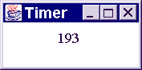
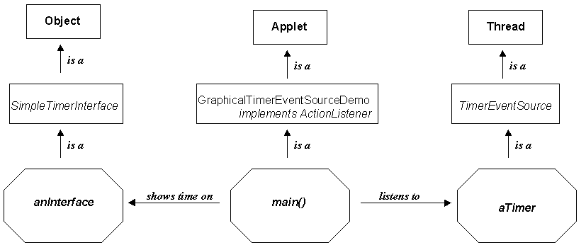
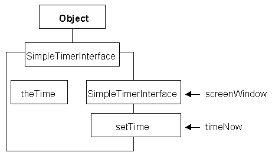
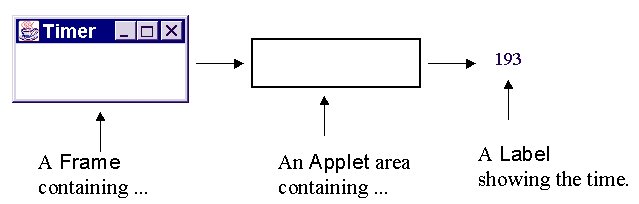

This artefact will introduce the techniques which can be used to place an independent top-level window on the desktop. A GraphicalTimerEventSourceDemo instance will construct and listen to an instance of the TimerEventSourceDemo class, in the same way as the TimerEventSourceDemo class did. However, instead of displaying the time elapsed in the terminal window it will display it in a top-level window that appears on the desktop as the application is started. The appearance of the GraphicalTimerEventSourceDemo is as follows.

The window will appear on the desktop, continually counting the number of tenths of a second, until the client program is stopped by using <CTRL>C at the terminal window from where it was started. The architecture of this artefact is illustrated in this instance diagram.

The GraphicalTimerEventSourceDemo extends the Applet class. The Applet class provides the capability to display a graphical user interface on the desktop (or within a Web browser window) and respond to the user's interaction with it. The SimpleTimerInterface class extends the Object class and provides the specialised component within which the time is displayed.
This instance diagram illustrates a three layer model architecture which divides an artefact which has a GUI into
a presentation component (SimpleTimerInterface) which appears on the desktop and interacts with the user
an application component (TimerEventSource) which contains the essential application functionality
a translation component (GraphicalTimerEventSourceDemo) which mediates between the application and the interface.
The class diagram for the SimpleTimerInterface class is as follows.

The class encapsulates a user interface Component of the Label class called theTime upon which the time value will be output. The constructor requires a screenWindow (an Applet) within which the Label can be added and so displayed. The only other method is setTime() which will arrange for the timeNow String argument to be displayed in the Label. The implementation of this class is as follows.
0001 // SimpleTimerInterface.java
0002 // Supplies a window within which the
0003 // state of a Timer can be shown.
0004 // Bridge between threading and GUIs.
0005 // Written for waypoint 5.
0006 //
0007 // Fintan Culwin, v0.1, March 1998.
0008
0009 import java.awt.*;
0010 import java.applet.*;
0011
0012
0013 public class SimpleTimerInterface extends Object {
0014
0015 private Label theTime;
0016
0017 public SimpleTimerInterface( Applet screenWindow) {
0018 super();
0019 theTime = new Label( "******");
0020 screenWindow.add( theTime);
0021 } // End SimpleTimerInterface constructor.
0022
0023 public void setTime( String timeNow) {
0024 theTime.setText( timeNow);
0025 } // End setTime;
0026
0027 } // End SimpleTimerInterface class.
This class will declare an instance of the Label class which is a part of the Java Abstract Windowing Toolkit (AWT) package, accordingly the entire java.awt package is imported on line 0009. It will also have to reference the Applet class and so its package is imported on line 0010.
The instance attribute, theTime, is declared on line 0015 and is constructed, within the SimpleTimerInterface, constructor on line 0019. The Label constructor used specifies an initial vale which it is to display ("******"). Having constructed the Label it is add()ed to the screenWindow, on 0020, which will cause it to be displayed in due course. The setTime() method causes its String argument, timeNow, to be displayed in theTime Label by passing it on as an argument to its setText() method.
The GraphicalTimerEventSourceDemo class has the responsibility for constructing an instance of the SimpleTimerInterface class as it prepares itself. The start of the implementation of this class is as follows.
0001 // GraphicalTimerEventSourceDemo.java
0002 // Timer class which demonstrates receiving
0003 // ActionEvents from a unicaster and showing
0004 // them in a graphical window.
0005 // Bridge between threading and GUIs.
0006 // Written for waypoint 5.
0007 //
0008 // Fintan Culwin, v0.1, March 1998.
0009
0010 import java.awt.*;
0011 import java.applet.*;
0012 import java.awt.event.*;
0013
0014 public class GraphicalTimerEventSourceDemo extends Applet
0015 implements ActionListener {
0016
0017 private TimerEventSource aTimer;
0018 private SimpleTimerInterface anInterface;
0019
0020 public void init() {
0021
0022 aTimer = new TimerEventSource();
0023 anInterface = new SimpleTimerInterface( this);
0024 try {
0025 aTimer.addActionListener( this);
0026 } catch ( java.util.TooManyListenersException exception) {
0027 // do nothing
0028 } // End try/catch
0029 aTimer.start();
0030 } // End init.
This class commences by importing the java.awt, java.applet and java.awt.event packages; for reasons already explained. The class declaration, on line 0014 and 0015, indicates that the and implements the ActionListener interface, as indicated in the instance diagram given above.
The construction of an Applet is much more complex than the construction of almost all other classes and so it is not advisable to override the Applet constructor. Instead Java has arranged that an overridden init() method will be called as a part of applet construction. Accordingly this class declares an init() method, on line 0020, and does not declare a constructor.
The init() method commences by constructing the encapsulated TimerEventSource instance, called aTimer, as with the previous demonstration client. It then, on line 0023, constructs the SimpleTimerInterface instance, called anInterface. This constructor requires an argument of the Applet class within which it will install the interface; as the GraphicalTimerEventSourceDemo class extends the Applet class, this instance can be passed as a suitable argument. The consequence of this will be that the Label will appear within the Applet's window.
The remainder of the GraphicalTimerEventSourceDemo init() method is identical to the second part of the TimerEventSourceDemo constructor, registering itself as the recipient of ActionEvents generated by the timer and then starting the timer. The implementation of the GraphicalTimerEventSourceDemo actionPerformed() method, as follows, is somewhat similar to the TimerEventSourceDemo actionPerformed() method.
0033 public void actionPerformed( ActionEvent event) {
0034 anInterface.setTime( event.getActionCommand());
0035 } // End actionPerformed.
However: instead of sending the time, contained within the actionCommand attribute of the ActionEvent to the terminal with System.out.println() it sends it to the SimpleTimerInterface instance (anInterface) to be shown to the user.
The main() action of the GraphicalTimerEventSourceDemo class, as follows, again has to construct an instance of its own class, for the same reasons as previously described.
0038 public static void main( String argv[]) {
0039
0040 Frame frame = new Frame("Timer");
0041 GraphicalTimerEventSourceDemo theDemo
0042 = new GraphicalTimerEventSourceDemo();
0043
0044 theDemo.init();
0045 frame.add( theDemo, "Center");
0046
0047 frame.show();
0048 frame.setSize( frame.getPreferredSize());
0049 } // End main.
0050
0051 } // End class GrahicalTimerEventSourceDemo.
However this class also has to construct the window Frame within which the Applet will appear, as illustrated in this diagram.

An Applet may appear within a Web page in a browser; if it is to appear in a top-level window on the desktop independently of a browser it has to be add()ed to a Frame instance. In the main() action the Frame() is constructed, with the title "Timer" on line 0040 and the GraphicalTimerEventSourceDemo instance added to it on line 0045, after it has been initialised on line 0044. The remaining actions make the frame visible on the desktop (show()) and ensures it is appropriately sized (setSize()).


Produce a diagram, similar to that given for the TimerEventSourceDemo client which illustrates what happens when this client is executed.
Is there anything preventing the GraphicalTimerEventSourceDemo main() method from constructing two (or more) instances of the GraphicalTimerEventSourceDemo class? If there is not, what would be appear on the desktop? Try it!
The SimpleTimerInterface.java source contains an alternative setTime() implementation. Examine this method and predict what effect it will have. Then uncomment the alternative implementation, comment out the original implementation, recompile and execture the ammended client to see if you were correct.
Produce a JSP schematic for the alternative setTime() implementation.